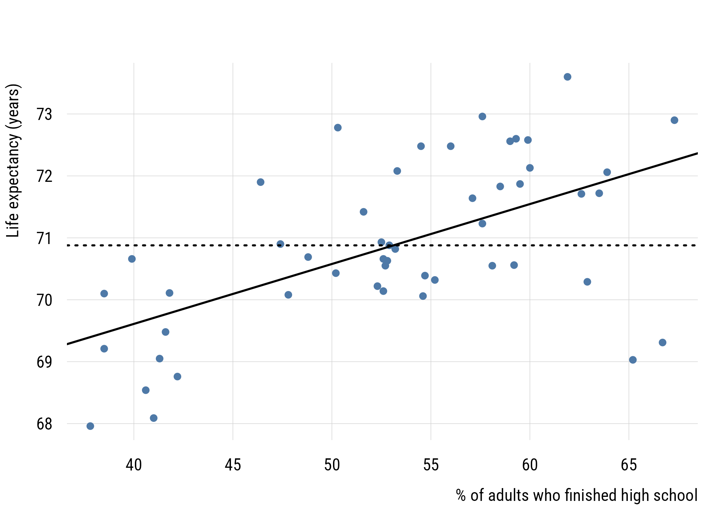
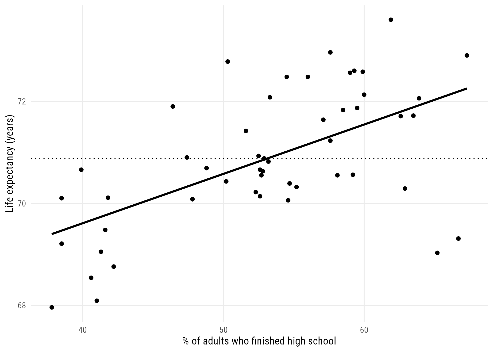
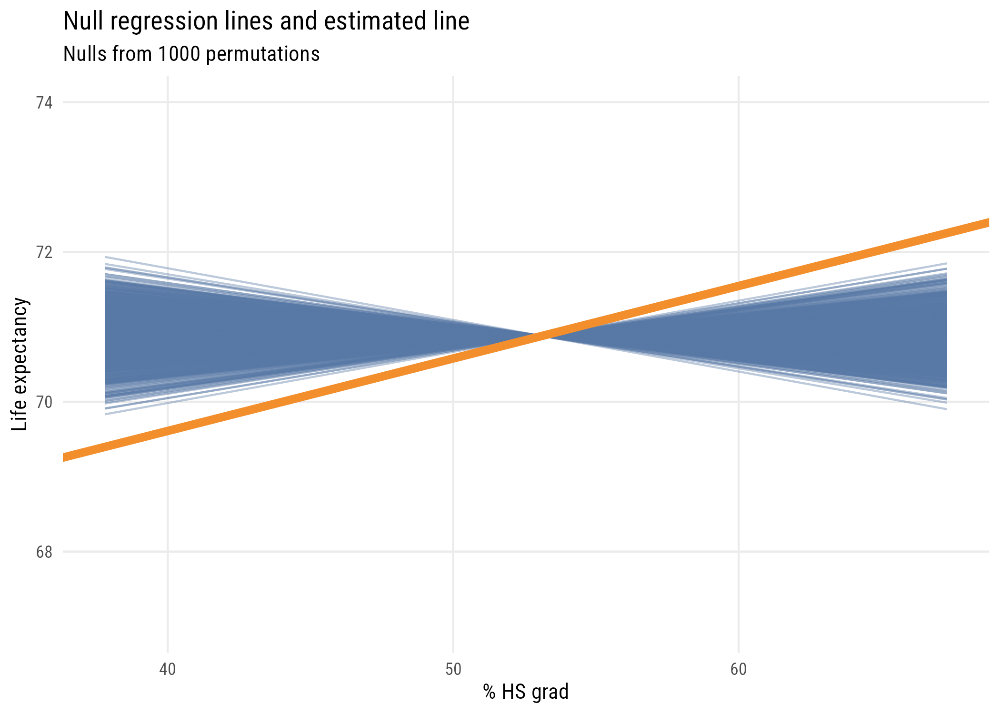

This is our first step into a larger world (of regression analysis). Here, instead of comparing zero-parameter models (MC) to one-parameter models (MA), we’re going to compare one-parameter models (MC) to two-parameter models (MA). The basic question is whether we want to make the same prediction for every observation or different predictions for different observations, conditional on their value of some predictor.
As before, we’ll use simulations to understand null distributions, statistical inference, and power.
The GSS is a survey of individuals answering mostly categorical questions, and it’s a poor place to look at relationships between two continuous variables. So we switch sources. state.x77 ships with R and records social and economic statistics for the fifty US states as of the 1970s.
state life_exp hs_grad Income Illiteracy
Alabama Alabama 69.05 41.3 3624 2.1
Alaska Alaska 69.31 66.7 6315 1.5
Arizona Arizona 70.55 58.1 4530 1.8
Arkansas Arkansas 70.66 39.9 3378 1.9
California California 71.71 62.6 5114 1.1
8.1 Defining a linear two-parameter model
We’ll look at regression first through the lens of two continuous variables.
\[y_i = \beta_0 + \beta_1 x_i + \epsilon_i\]
The structure is the same as Chapter 4. There’s a systematic part, and an error \(\epsilon_i\). The error is the state’s weirdness, everything about its life expectancy that graduation rates don’t account for. What changed is that the systematic part now has two parameters:
\(\beta_0\), the intercept: the predicted value when \(x = 0\).
\(\beta_1\), the slope: how much the prediction changes when \(x\) increases by one.
fit <-lm(life_exp ~ hs_grad, data = states)plt(life_exp ~ hs_grad, data = states, type ="p",xlab ="% of adults who finished high school",ylab ="Life expectancy (years)")abline(fit, lwd =2)abline(h =mean(states$life_exp), lty =3, lwd =2)

Figure 8.1: The fitted regression line, contrasted with the same prediction for every state.
ggplot(states, aes(x = hs_grad, y = life_exp)) +geom_point() +geom_smooth(method ="lm", se =FALSE, color ="black") +geom_hline(yintercept =mean(states$life_exp), linetype ="dotted") +labs(x ="% of adults who finished high school",y ="Life expectancy (years)")
`geom_smooth()` using formula = 'y ~ x'

Figure 8.2: The fitted regression line, contrasted with the same prediction for every state.
The dotted line is model C: the same prediction for each state.
R chose that line by minimizing the sum of squared residuals, the same way it chose the mean in Chapter 4. The bowl from that chapter is still there; it simply has two dimensions now.
coef(fit)
(Intercept) hs_grad
65.73965315 0.09676408
ImportantSay “differ,” not “increase”
It’s tempting to describe the slope as “increasing graduation by ten points raises life expectancy by one year.” Resist it.
Our data are fifty states observed once. Nothing here rules out the obvious alternative explanations: richer states have both better schools and better health care; states differ in age structure, industry, and climate. A regression describes how the outcome differs across cases with different predictor values. It doesn’t establish what would happen if you intervened.
8.3 An alternative specification (or five!)
8.3.1 Centering
states <- states |>mutate(hs_centered = hs_grad -mean(hs_grad))fit_centered <-lm(life_exp ~ hs_centered, data = states)coef(fit_centered)
(Intercept) hs_centered
70.87860000 0.09676408
The intercept, \(b_0\), is now the expected value of the outcome when hs_grad is at its mean. But the slope, \(b_1\), is the same.
states <- states |>mutate(hs_pomp = (hs_grad -min(hs_grad)) / (max(hs_grad) -min(hs_grad)))coef(lm(life_exp ~ hs_pomp, data = states))
(Intercept) hs_pomp
69.39734 2.85454
Now \(b_0\) is the predicted value when X is at its sample minimum and \(b_1\) is how much the prediction would change when X is set to its sample maximum. So here moving from the least- to most-educated state, the model would expect life expectancy to be about 2.9 years higher.
8.3.3 X-standardization
Sometimes when Y is in naturally interpretable units (like years) and X is a bit more abstract, we can use x-standardization. This means converting X into a z-score before using it as predictor.
\[X^* = \frac{X_i-\bar{X}}{s_X}\]
states <- states |>mutate(hs_z = (hs_grad -mean(hs_grad)) /sd(hs_grad))coef(lm(life_exp ~ hs_z, data = states))
(Intercept) hs_z
70.8786000 0.7815633
This now means that a plus one standard deviation difference in the % of high school graduates predicts .78 additional years of life expectancy.
8.3.4 Full standardization
Both X and Y can also be standardized in this way.
states <- states |>mutate(life_z = (life_exp -mean(life_exp)) /sd(life_exp))fit_std <-lm(life_z ~ hs_z, data = states)coef(fit_std)
(Intercept) hs_z
-4.653862e-15 5.822162e-01
Here the intercept will always be zero, since simple regression always expects the outcome to be at its average when the predictor is at its average. (And here, both averages are zero.)
The slope here means that “in a state that is one SD more educated, we expect life expectancy to be .582 SD higher.”
A fully standardized simple regression coefficient is exactly the same as Pearson’s r or the correlation coefficient. And this value squared is exactly R2 (hence the name!), or PRE.1
1 This to me is the clearest take on the meaning of the correlation coefficient.
As you can see, the fit (F, PRE) stays the same but the interpretation of the coefficients changes. That difference in coefficients is for human interpretability, so use whichever makes the most sense to you and your likely readers.
8.4 Statistical inference in two-parameter models
8.4.1 Testing the null
We’re going to do this with simulations. Specifically, we’re going to implement a permutation test. That means keeping all the individual X values and all the individual Y values as they are in the real data. But we pair them up randomly, which makes the columns independent of each other.
Let’s make a function to randomly pair x and y values and then estimate a regression line.
set.seed(522)# this will make the code less messyx <- states$hs_grady <- states$life_expget_coefs <-function(x, y) { d <-tibble(y =sample(y, length(y)),x =sample(x, length(x)) ) fit <-lm(y ~ x, data = d)tibble(b0 =unname(coef(fit)[1]),b1 =unname(coef(fit)[2]) )}
Make a skeleton and get regression lines from each run of get_coefs().
Figure 8.3: One thousand regression lines from shuffled data, with the real fit on top.
ggplot(mysticks, aes(x = x, y = y, group = id)) +geom_line(alpha =0.4, color = tableau10[1]) +geom_abline(intercept =coef(fit)[1], slope =coef(fit)[2],linewidth =2, color ="#F28E2B") +coord_cartesian(xlim =c(x_min, x_max), ylim =c(67, 74)) +labs(title ="Null regression lines and estimated line",subtitle ="Nulls from 1000 permutations",x ="% HS grad",y ="Life expectancy")

Figure 8.4: One thousand regression lines from shuffled data, with the real fit on top.
We see that the estimated regression line is quite a bit different from the lines built in a world where the null hypothesis is true (i.e., X and Y are independent).
Estimate Std. Error t value Pr(>|t|)
(Intercept) 65.73965315 1.04747866 62.759897 9.916827e-48
hs_grad 0.09676408 0.01950374 4.961308 9.196096e-06
Consider all the ways that these quantities relate to each other. Make sure you understand the connection between t, F, \(b_1\), the standard error, R2, the confidence interval, etc. Which ones can you make out of which other ones?
We can, of course, also construct a confidence interval using simulations rather than formulas. We can use bootstrapping2 for this. You probably get the drill by now.
2 Reminder: bootstrapping means repeatedly sampling from the real data with replacement, which allows us to incorporate sampling variability into our estimates.
set.seed(0213)# function to do what I want onceget_boot_slope <-function() { fit <-lm(life_exp ~ hs_grad,data =slice_sample(states, # here's the BS samplen =nrow(states),replace =TRUE)) b1 <-coef(fit)[2]return(b1)}# skeleton and applymyboots <-tibble(id =1:4000) |>rowwise() |>mutate(b1 =get_boot_slope())
We can calculate the 99% interval two ways. The percentile bootstrap will just take the 0.5% and 99.5% values of the simulated slopes:
quantile(myboots$b1, c(0.005, 0.995))
0.5% 99.5%
0.03292772 0.15565012
The normal or empirical bootstrap will use the SD of these simulations to construct the standard error. Then we can use that number in conjunction with the original regression estimate of \(b_1\) to create the interval.
The SE we get from bootstrapping is 0.024. This is close to, but larger than, the theory-based estimate we got from lm() (0.020). This is for reasons that we’re not going to go into here.
8.4.3 Power analysis
Using fully standardized variables allows us to think about power pretty easily, since the effect size is just the correlation.3
3 The pwr package has pwr.r.test() for this. The formula below is the same calculation, using Fisher’s z transformation of the correlation.
What we see is that it’s very, very expensive to try and detect small effects! (And of course we could do this via simulation but I think you have the picture by now.)
8.5 Two-parameter model comparison
There are situations where we might jointly test two null hypotheses at the same time. Let’s look at another example of that using our GSS TV data.
We can think about a model where \(TV3\) is a function of \(TV1\). We can stipulate two models: a null model where 2014 TV hours is exactly the same as 2010 TV hours and another where we estimate it from the data. The null here is no one has changed at all.4
4 This is different from saying that the average change is zero, which is what we tested in Chapter 7. The null hypothesis here is basically equivalent to asserting that the Wave 1 and Wave 3 data are identical, which is not something we’d do very often.
We can kind of trick R to estimate the first model (using offset() to constrain \(\beta_1 = 1\)) and use it in the normal way to get the second.
mod_c <-lm(w3 ~0+offset(w1), data = panel)mod_a <-lm(w3 ~1+ w1, data = panel)anova(mod_c, mod_a)
Analysis of Variance Table
Model 1: w3 ~ 0 + offset(w1)
Model 2: w3 ~ 1 + w1
Res.Df RSS Df Sum of Sq F Pr(>F)
1 900 5045.0
2 898 3720.2 2 1324.8 159.89 < 2.2e-16 ***
---
Signif. codes: 0 '***' 0.001 '**' 0.01 '*' 0.05 '.' 0.1 ' ' 1
As is clear from the output, we’re doing an F-test with 2 numerator df and 898 denominator df. We can clearly reject the null that the responses are identical!
8.5.1 How large would PRE have to be?
One more use of the PRE-and-F connection, running in reverse. Since F and PRE are two views of the same quantity, we can convert a critical F into a critical PRE:
The critical F barely moves as the sample grows. The critical PRE collapses.
8.6 Recap
simple regression compares a one-parameter model to a two-parameter model: the same prediction for everyone, or different predictions conditional on a predictor
the line is fitted by minimizing SSE, exactly as the mean was
centering, normalizing, and standardizing change the coefficients’ units without changing the fit
the fully standardized slope is Pearson’s r, and \(r^2 = R^2 = \text{PRE}\)
a permutation test builds the null by shuffling the pairing between the variables
model C need not be intercept-only; offset() fixes a coefficient at a chosen value, letting you test any claim you can write down